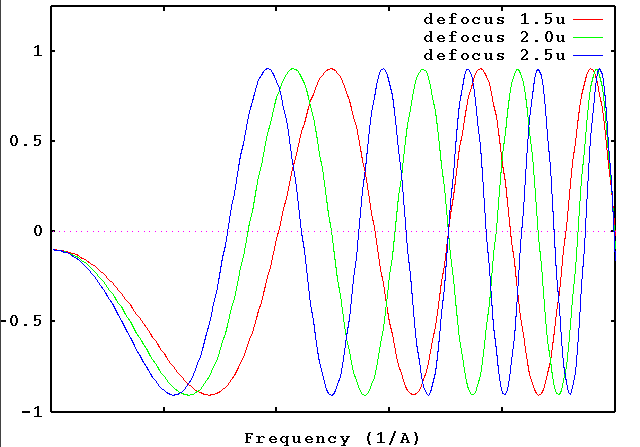
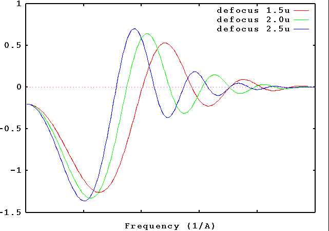
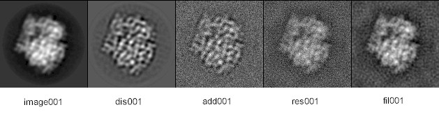

Contents |
The image formation in bright field electron microscopy
can be described by the action of the contrast transfer function (CTF) H(k).
Accordingly, the relationship between the object o(r) and the
image contrast i(r) can be written as
i(r) = o(r)* h(r), where * stands for the
convolution operation, and h(r) is the point spread function, which is the
Fourier transform of H(k). Thus, following the convolution
theorem, I(k) = O(k)H(k).
The shape of the CTF, H(k), depends on several parameters (for
details, see Frank, 2006):
defocus [A] - which describes the deviation in the focus of
the objective lens from the "Gaussian focus."
The only parameter being varied in the experiment is the defocus.
Depending on the defocus setting, different features of the object
appear enhanced or suppressed in the image. This is because the
CTF oscillates between -1 (negative contrast transfer) and +1
(positive contrast transfer) as we go from low to high spatial
frequencies. The exact locations of the zero crossings (where
no contrast is transferred, and information is lost) depends on
the defocus.
In CTF correction, we attempt to retrieve the undistorted object from the image.
This attempt is compromised by the presence of noise; i.e., recovery of
the object is never ideal.
Since the CTF always has zero crossings, part of the information about the object is lost.
This is why we make use of several images obtained at different defocus settings,
hoping that the resulting CTFs Hn(k) jointly
(after appropriate weighting) cover the whole Fourier space without gap.
The Wiener filter is the least square solution to the problem
of signal recovery in the presence
of noise. Let's assume we have N images in (r)
(with Fourier transforms In(k)) whose CTFs are Hn(k).
In that case, the best estimation of the object transform O(k) is
What is the contrast transfer function?
spherical aberration coefficient [mm] - which describes the
(third order) spherical aberration of the wave front in the objective lens.
source size [1/A] - which describes the illumination divergence,
expressed as a size in the back focal plane (hence a quantity in
reciprocal space).
defocus spread - which describes the spread of defocus due to
the spread of electron energies or to the fluctuation of lens current.
Contrast transfer functions - 3 defocus settings

Contrast transfer functions - effect of envelope functions

and SNR is the signal-to-noise ratio, defined as the ratio of signal to noise variances.
In the SPIDER procedure file, ctfexample.spi, we first simulate the action of the electron microscope, by applying a CTF to an "object", which is the projection of the 3D density map of the ribosome, and adding noise to the result, and then use the 2D Wiener filtering operation described above to retrieve the original. The gallery of images describes the progress of these operations. Note that the choice SNR=100 makes the Wiener filter quite aggressive, and this benefits the recovery of low spatial frequencies responsible for defining the particle's boundary and overall shape.

Various CTF parameters are used in SPIDER's 'TF' operations. See the glossary for definitions. These parameters, along with some others, are listed in a parameter document file. CTF parameter estimation is done on micrographs using 'CTF FIND' to estimate defocus and astigmatism.
A number of python graphical tools for analyzing the CTF are included with SPIDER:
Frank, J. (2006) Three-Dimensional Electron Microscopy of Macromolecular Assemblies. Oxford University Press, New York.
P.A. Penczek, J. Zhu, R. Schröder, J. Frank (1997) Three Dimensional Reconstruction with Contrast Transfer Compensation from Defocus Series Special Issue on Signal and Image Processing, Scanning Microscopy Volume 11, 1997, page 147.
G. T. Herman and J. Frank, Editors (2014) Computational Methods for Three-Dimensional Microscopy Reconstruction Birkhauser, Basel 260pg. DOI: 0.1007/978-1-4614-9521-5